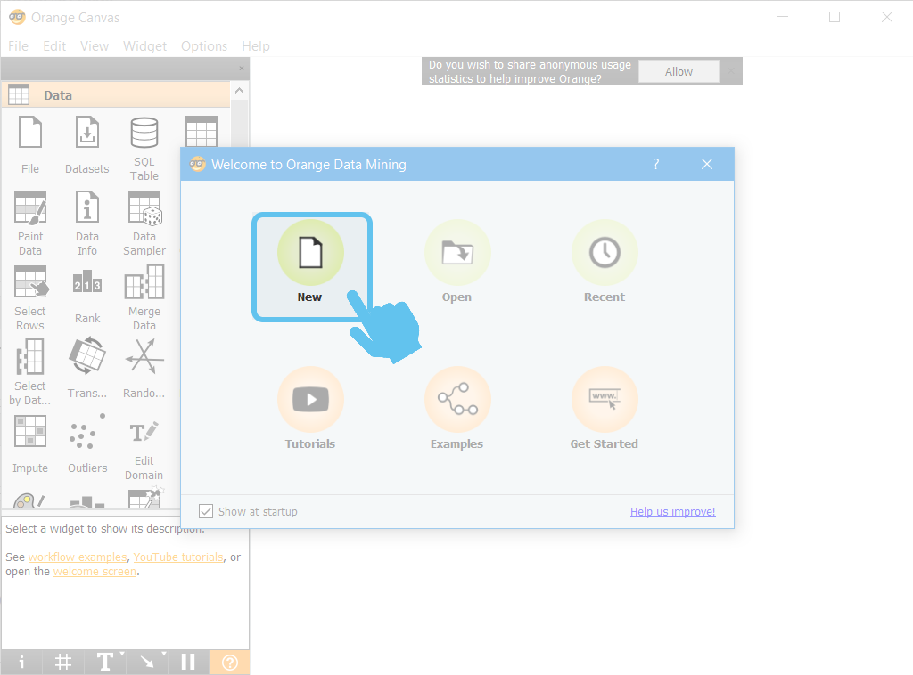
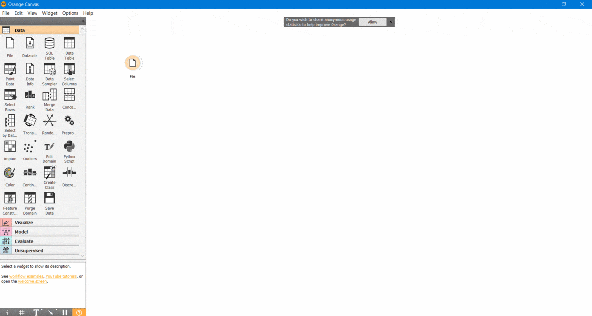
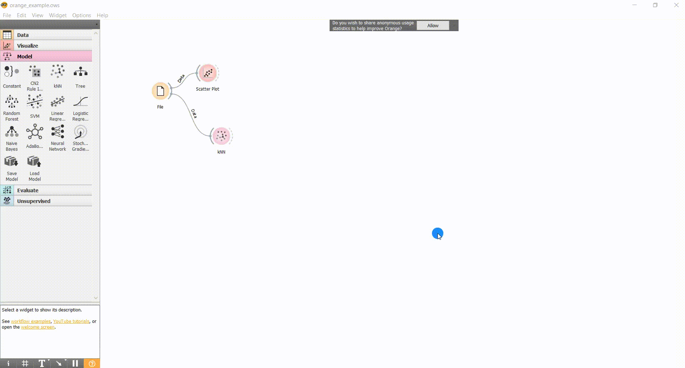

|
|
|
|
|
|
|
|
|
Rock, Paper or Scissor Game - Train and Classify [Orange] |
| Tags | train_and_classify☁machine-learning☁features☁train☁nearest-neighbour☁orange |
Through the set of 4 Jupyter Notebooks (referred on the list below) that are part of our "Rock, Paper or Scissor Classification Game" a reasonable understanding of the different Machine Learning stages, that need to be followed in order to train an effective classification system, can be reached.
Previous Notebooks that are part of "Rock, Paper or Scissor Game - Train and Classify" module
-
Rock, Paper or Scissor Game - Train and Classify [Volume 1] | Experimental Setup

-
Rock, Paper or Scissor Game - Train and Classify [Volume 2] | Feature Extraction
-
Rock, Paper or Scissor Game - Train and Classify [Volume 3] | Train and Classify
-
Rock, Paper or Scissor Game - Train and Classify [Volume 4] | Performance Evaluation
All the previous
Jupyter Notebooks
are focused on the application of
scikit-learn
 (
Python
) functionalities.
(
Python
) functionalities.
However
Anaconda
toolbox (presented at
Download, Install and Execute Anaconda
 ) includes a very intuitive and graphical resource called
Orange
) includes a very intuitive and graphical resource called
Orange
 , that can be an interesting tool to complement our 4 volumes of
"Rock, Paper or Scissor Game - Train and Classify" module
, that can be an interesting tool to complement our 4 volumes of
"Rock, Paper or Scissor Game - Train and Classify" module
On the current Jupyter Notebook it will be done a very quick presentation of Orange
PR - Installation of
Orange
through
Anaconda
PR1 - Launch
Anaconda Navigator
PR2 - Click on "Install" button below the Orange icon

PR3 - Please, wait a few moments for the end of installation procedure
When the installation is finished the "Launch" button becomes available below Orange icon !

1 - Start Orange by clicking on "Launch" button
2 - Click on "New" icon in order to create a new project

For training our classifier we need to be in possession of training data, i.e., multiple training examples of each class objectively described by a set of features (as demonstrated at
Rock, Paper or Scissor Game - Train and Classify [Volume 2] | Feature Extraction
 )
)
In the following steps we will try to replicate, using
Orange
, the training process of a
k-Nearest Neighbour
classifier (
Rock, Paper or Scissor Game - Train and Classify [Volume 3] | Train and Classify
 ) and the performance evaluation of the trained system (
Rock, Paper or Scissor Game - Train and Classify [Volume 4] | Performance Evaluation
) and the performance evaluation of the trained system (
Rock, Paper or Scissor Game - Train and Classify [Volume 4] | Performance Evaluation
 ).
).
As a starting point, we will use the extracted list of features on
Rock, Paper or Scissor Game - Train and Classify [Volume 2] | Feature Extraction
 .
.
⚠ The features list file should be in a compatible format to be read by Orange . For our example we choose .tab file format, where each row j represents a training example and each column i (consecutive columns are separated by a tab ) contains the value of the feature number j for the respective training examples i .
Below, it is shown our file with 20 training examples (number of rows) and the 13 selected features (number of columns).
3 - Import a file, with training example data, into Orange
Click on "File" icon located at "Data" tab

4 - Double-click the new "File" icon added to our workspace
A new screen will appear, which enables the specification of features file location !

5 - Specify which column contain the target variable (list with class labels of each training example)
Scroll down the list until finding the target variable. Then change the "Role" to target .

6 - Define a name for each column/feature
It is really simple, at each row you only need to double-click on the predefined name and the edit functionality will be automatically enabled.

7 - After renaming all the features, close the window in order to confirm your choices and proceed the configuration procedure

8 - For visualising how different pairs of variables are "separating" the four classes, let"s explore a visualisation functionality of
Orange
8.1 - Access
Visualize
tab

8.2 - Click on "Scatter Plot" icon

8.3 - Link the two elements "File" and "Scatter Plot"

8.4 - Double-click on "Scatter Plot" icon for visualising the distribution of classes for each pair of features

9 - After preparing our classification environment we can select our model and advance to the respective training
The selected model was the k-Nearest Neighbour classifier ( Rock, Paper or Scissor Game - Train and Classify [Volume 3] | Train and Classify
9.1 - Access Model tab
Located at the left side of Orange window.

9.2 - Drag kNN icon to the working environment

9.3 - Double-click on kNN icon for prompting the configuration window of our model
We will keep the predefined values, choosing k (number of neighbours) as 5 and the "Euclidean Norm" to estimate the distance between testing point and training examples.

9.4 - Link "File" icon with "kNN" icon
With this operation we are specifying the inputs (training data) that will be used to train our model.

10 - There is only one step remaining... "Evaluation" our classifier
Repeating the methodology of Rock, Paper or Scissor Game - Train and Classify [Volume 4] | Performance Evaluation
10.1 - Open "Evaluate" tab
Located at the left side of Orange window.
10.2 - Drag "Test & Score" to the working environment

10.3 - Link "File" and "kNN" icons with "Test & Score" icon
Essentially what we are doing is specifying which is the training data and the model that will be fitted to it.

10.4 - Double-click on "Test & Score" icon to reach the testing results screen
10.5 - Specify the desired test procedure
Like previously referred, we will choose "Leave One Out" strategy

A
"Classification Accuracy"
of 90 % was obtained, which is identical to the obtained value at
Rock, Paper or Scissor Game - Train and Classify [Volume 4] | Performance Evaluation
 when a set with less features is used.
when a set with less features is used.

We reach the end of our introductory journey through Orange environment and, as you can see, it is amazing and extremely intuitive.
However we only explored a small fraction of the full capabilities of this environment.
With the previous steps the contents described on "Classification Game" Volumes 2 to 4 are replicated through a more graphical perspective.
We hope that you have enjoyed this guide.
biosignalsnotebooks
is an environment in continuous expansion, so don"t stop your journey and learn more with the remaining
Notebooks
 !
!